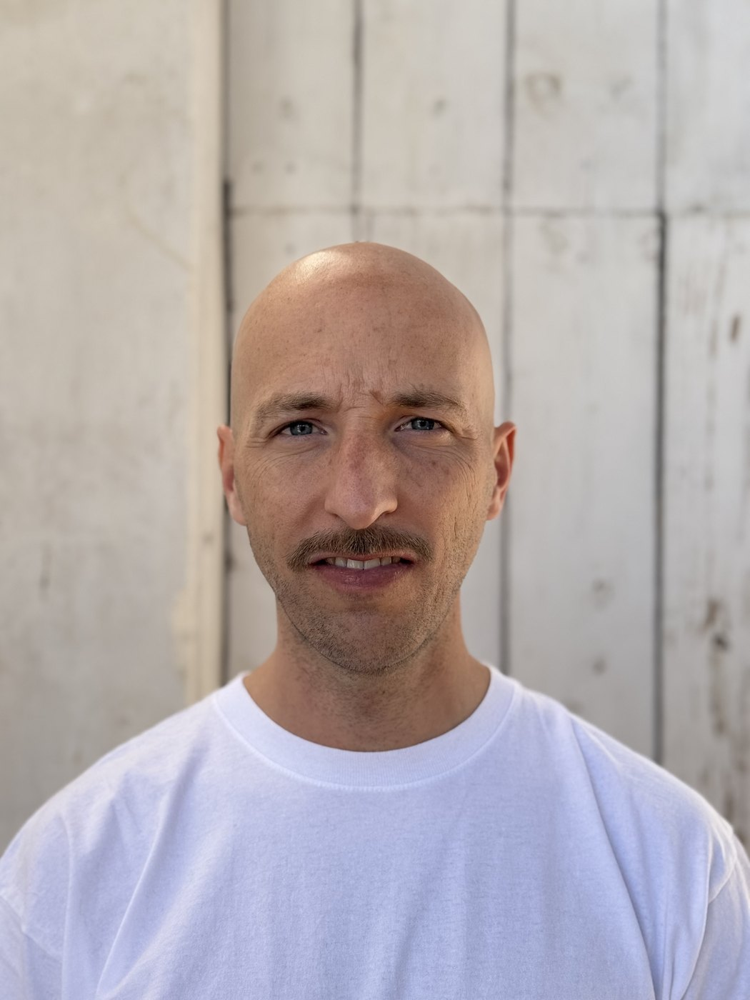

A decade spent making complex enterprise infrastructure legible, now applied to a new domain: food, and the data that makes it traceable and sustainable.
Led distributed teams across Italy, the UK and India on monitoring, ML-based anomaly detection and KPI frameworks for large-scale infrastructure.
FinOps, incident management and orchestration of automated systems: turning noisy signals into fast operational decisions.
Repositioning these skills onto MRV, sensor data and agri-food platforms — not starting from scratch, but translating a craft that already works.
For over ten years I led distributed technical teams across Italy, the United Kingdom and India as a Senior Manager in Group Monitoring Engineering, working on observability, anomaly detection and the orchestration of automated systems at scale.
I hold a degree in Computer Engineering from Politecnico di Milano, and over these years I built a skill set spanning operational monitoring, FinOps, incident management and KPI frameworks.
Today I'm bringing that background into a new field: agritech, agri-food sustainability and MRV (Monitoring, Reporting & Verification). It isn't starting over, it's a repositioning: the same tools I used to keep digital infrastructure under control are what you need to trace, verify and optimise agricultural systems.
The operational capabilities built over time, and how each one bridges into agritech and MRV.
Designing and running monitoring systems for distributed, mission-critical infrastructure. The same discipline applies to the observability of facilities, supply chains and agricultural systems.
Models, including ML-based ones, to spot abnormal behaviour in telemetry. Transferable to monitoring field-sensor data and agri data quality.
Defining reliable metrics to measure operational performance. A direct bridge to sustainability metrics and MRV protocols.
Governing and reducing cloud cost at scale. The same measurement-and-allocation method applies to carbon accounting and resource accounting.
Handling incidents and operational continuity for critical systems, with teams distributed across time zones and repeatable processes under pressure.
Orchestrating end-to-end pipelines and automated systems. The same foundations as agritech IoT and data acquisition from field to platform.
A craft built on data and reliability, now oriented toward a new sector.